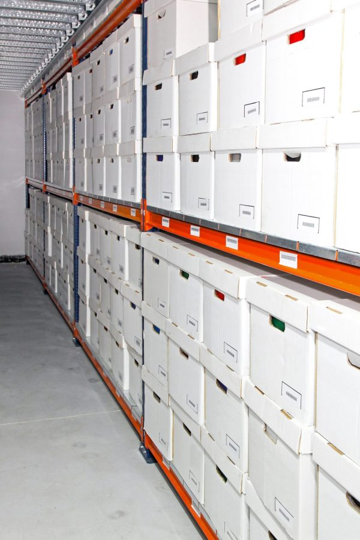

Whether paper, digital or both, our solutions are designed around your operational and regulatory requirements. We ensure records are complete, traceable and readily accessible while supporting aircraft owners, operators and lessors with reliable technical records management.

We provide comprehensive aircraft technical records services:
We provide digital aircraft records solutions that support secure, efficient and accessible information management:
We support aircraft transfers between operators, owners, CAMOs and airworthiness management systems through structured records assessment and management:
Your historical maintenance and airworthiness records are a vital asset. By combining secure physical storage with digital searchability, we provide the transparency and “smooth fleet transitions” that modern aviation demands. At Muhtarif Support, your data is always secure, searchable and audit-ready.
Contact ›